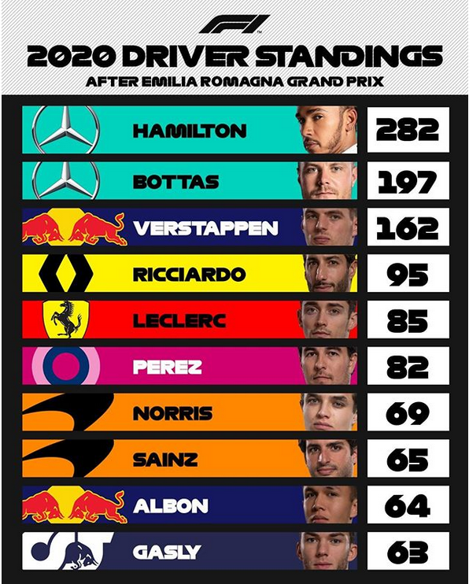
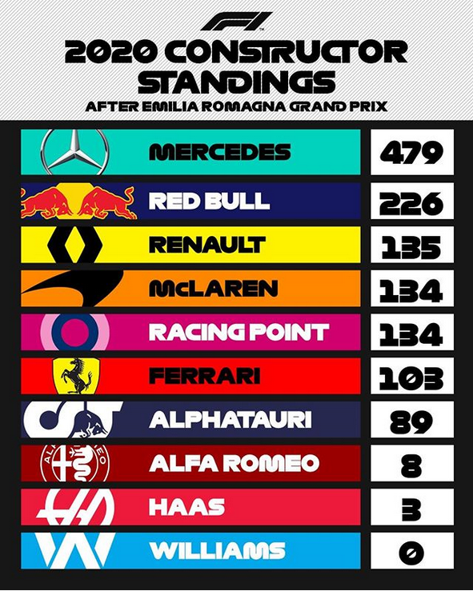

Qui sont les meilleurs pilotes de cette saison 2020 ?
Voici les 10 meilleurs pilotes de F1, avec leurs points à la fin de la course sur le circuit Emilia Romagna, Le 1 Octobre 2020.
On voit clairement que Hamilton est supérieur, sans mauvais jeu de mot, il roule même, sur son coéquipier, Bottas qui a 80 points de moins, et les autres pilotes de plus d'une centaine de points.
Si tu as raté le GP D'Emilia Romagna, voici un petit debrief ci-dessous
Si tu souhaite en apprendre plus sur la biographie des pilotes tu peux jeter un coup d'oeil en cliquant sur l'URL ci-dessous
Biographie des pilotes 2020Nous avons parler des pilotes, maintenant parlons des constructeurs.
Voici l'actuel top 10, des constructeurs en F1.
Grâce à ses 2 pilotes, Bottas et Hamilton, Mercedes se classe tout en haut du classement constructeur ! Et en bas du classement, Williams qui se retrouve à 0 point.
Merci d'avoir lu notre article, vous retrouvez ci dessous quelques liens utiles et les sources. Liens Utiles